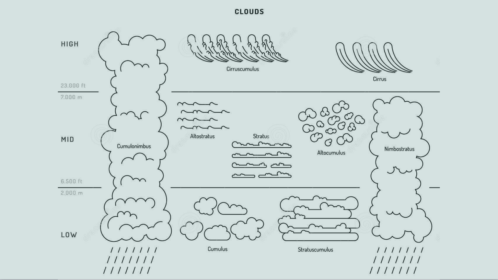

Quels sont les mécanismes à l'origine de leur formation
Les nuages sont des volumes d’air chargés de gouttelettes d’eau et/ou de cristaux, suspendus dans la troposphère. Comment ces gouttelettes sont arrivées là ?
Les mouvements d’air verticaux de la troposphère sont déclenchés par le réchauffement solaire. Ce réchauffement rend l'air moins dense, ce qui le fait monter. Quand l'air monte, la pression au-dessus de lui décroît, par conséquent il s'étend, s'opposant à la pression de l'air environnant. Or, pour s'étendre, de l'énergie est nécessaire, donc la température et la masse de l'air décroissent. Comme la température diminue, la vapeur d'eau dans la masse d'air peut se condenser ou se solidifier, relâchant la chaleur latente permettant une nouvelle élévation de la masse d’air.